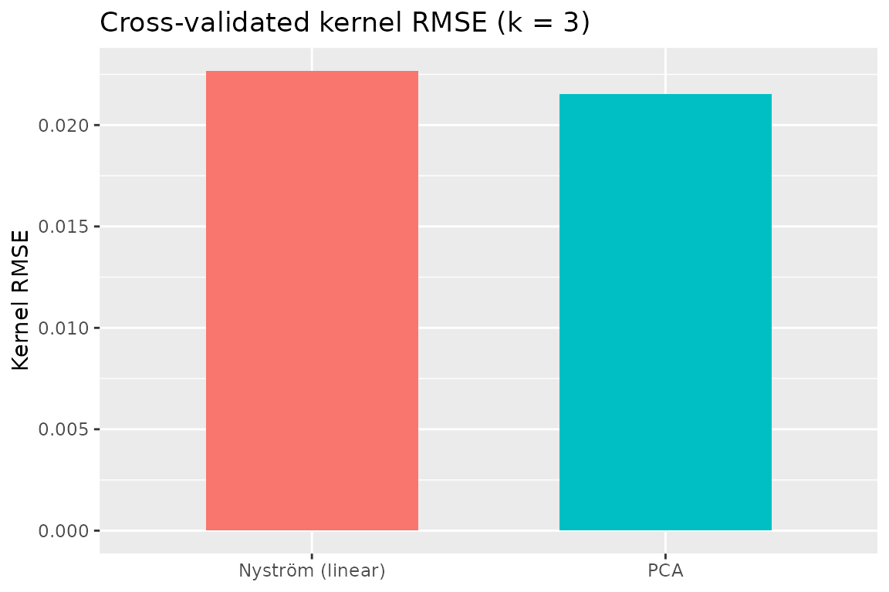

Cross-validation for Dimensionality Reduction
CrossValidation.RmdWhy Cross-validate Dimensionality Reduction?
When using PCA or other dimensionality reduction methods, we often face questions like: - How many components should I keep? - How well does my model generalize to new data? - Which preprocessing strategy works best?
Cross-validation provides principled answers by testing how well models trained on one subset of data perform on held-out data.
Quick Example: Finding the Right Number of Components
Let’s use the iris dataset to demonstrate:
# Prepare data
X <- as.matrix(scale(iris[, 1:4])) # 150 samples × 4 features
# Create 5-fold cross-validation splits
K <- 5
fold_ids <- sample(rep(1:K, length.out = nrow(X)))
folds <- lapply(1:K, function(k) list(
train = which(fold_ids != k),
test = which(fold_ids == k)
))
# Define fitting and measuring functions for PCA cross-validation
fit_pca <- function(train_data, ncomp) {
pca(train_data, ncomp = ncomp, preproc = center())
}
measure_pca <- function(model, test_data) {
# Reconstruct test data using the model
test_scores <- project(model, test_data)
reconstructed <- reconstruct(model, scores = test_scores)
# Measure reconstruction error
measure_reconstruction_error(test_data, reconstructed, metrics = c("rmse"))
}
# Run cross-validation for different numbers of components
results_list <- lapply(1:4, function(ncomp) {
cv_res <- cv_generic(
data = X,
folds = folds,
.fit_fun = fit_pca,
.measure_fun = measure_pca,
fit_args = list(ncomp = ncomp),
backend = "serial"
)
cv_res$ncomp <- ncomp
cv_res
})
#> Warning in value[[3L]](cond): Measuring failed for fold 1: all(dim(Xtrue) ==
#> dim(Xrec)) is not TRUE
#> Warning in value[[3L]](cond): Measuring failed for fold 2: all(dim(Xtrue) ==
#> dim(Xrec)) is not TRUE
#> Warning in value[[3L]](cond): Measuring failed for fold 3: all(dim(Xtrue) ==
#> dim(Xrec)) is not TRUE
#> Warning in value[[3L]](cond): Measuring failed for fold 4: all(dim(Xtrue) ==
#> dim(Xrec)) is not TRUE
#> Warning in value[[3L]](cond): Measuring failed for fold 5: all(dim(Xtrue) ==
#> dim(Xrec)) is not TRUE
#> Warning in value[[3L]](cond): Measuring failed for fold 1: all(dim(Xtrue) ==
#> dim(Xrec)) is not TRUE
#> Warning in value[[3L]](cond): Measuring failed for fold 2: all(dim(Xtrue) ==
#> dim(Xrec)) is not TRUE
#> Warning in value[[3L]](cond): Measuring failed for fold 3: all(dim(Xtrue) ==
#> dim(Xrec)) is not TRUE
#> Warning in value[[3L]](cond): Measuring failed for fold 4: all(dim(Xtrue) ==
#> dim(Xrec)) is not TRUE
#> Warning in value[[3L]](cond): Measuring failed for fold 5: all(dim(Xtrue) ==
#> dim(Xrec)) is not TRUE
#> Warning in value[[3L]](cond): Measuring failed for fold 1: all(dim(Xtrue) ==
#> dim(Xrec)) is not TRUE
#> Warning in value[[3L]](cond): Measuring failed for fold 2: all(dim(Xtrue) ==
#> dim(Xrec)) is not TRUE
#> Warning in value[[3L]](cond): Measuring failed for fold 3: all(dim(Xtrue) ==
#> dim(Xrec)) is not TRUE
#> Warning in value[[3L]](cond): Measuring failed for fold 4: all(dim(Xtrue) ==
#> dim(Xrec)) is not TRUE
#> Warning in value[[3L]](cond): Measuring failed for fold 5: all(dim(Xtrue) ==
#> dim(Xrec)) is not TRUE
#> Warning in value[[3L]](cond): Measuring failed for fold 1: all(dim(Xtrue) ==
#> dim(Xrec)) is not TRUE
#> Warning in value[[3L]](cond): Measuring failed for fold 2: all(dim(Xtrue) ==
#> dim(Xrec)) is not TRUE
#> Warning in value[[3L]](cond): Measuring failed for fold 3: all(dim(Xtrue) ==
#> dim(Xrec)) is not TRUE
#> Warning in value[[3L]](cond): Measuring failed for fold 4: all(dim(Xtrue) ==
#> dim(Xrec)) is not TRUE
#> Warning in value[[3L]](cond): Measuring failed for fold 5: all(dim(Xtrue) ==
#> dim(Xrec)) is not TRUE
# Combine results
cv_results <- do.call(rbind, lapply(results_list, function(x) {
data.frame(ncomp = x$ncomp, rmse = mean(x$results$rmse, na.rm = TRUE))
}))
#> Warning: Unknown or uninitialised column: `results`.
#> Warning in mean.default(x$results$rmse, na.rm = TRUE): argument is not numeric
#> or logical: returning NA
#> Warning: Unknown or uninitialised column: `results`.
#> Warning in mean.default(x$results$rmse, na.rm = TRUE): argument is not numeric
#> or logical: returning NA
#> Warning: Unknown or uninitialised column: `results`.
#> Warning in mean.default(x$results$rmse, na.rm = TRUE): argument is not numeric
#> or logical: returning NA
#> Warning: Unknown or uninitialised column: `results`.
#> Warning in mean.default(x$results$rmse, na.rm = TRUE): argument is not numeric
#> or logical: returning NA
# View results
print(cv_results)
#> ncomp rmse
#> 1 1 NA
#> 2 1 NA
#> 3 1 NA
#> 4 1 NA
#> 5 1 NA
#> 6 2 NA
#> 7 2 NA
#> 8 2 NA
#> 9 2 NA
#> 10 2 NA
#> 11 3 NA
#> 12 3 NA
#> 13 3 NA
#> 14 3 NA
#> 15 3 NA
#> 16 4 NA
#> 17 4 NA
#> 18 4 NA
#> 19 4 NA
#> 20 4 NAThe plot shows that 2 components capture most of the variance, with diminishing returns after that.
Understanding the Output
The cv_generic() function returns a tibble
containing:
- fold: The fold number
- model: The fitted model for each fold (stored as a list column)
- metrics: Performance metrics for each fold (stored as a list column of tibbles)
# View the structure of CV results
str(results_list[[1]], max.level = 2)
#> tibble [5 × 4] (S3: tbl_df/tbl/data.frame)
#> $ fold : int [1:5] 1 2 3 4 5
#> $ model :List of 5
#> $ metrics:List of 5
#> $ ncomp : int [1:5] 1 1 1 1 1
# Extract and combine all metrics across folds
all_fold_metrics <- lapply(results_list, function(res) {
data.frame(
ncomp = res$ncomp,
fold_metrics = dplyr::bind_rows(res$metrics)
)
})
print(head(all_fold_metrics[[1]]))
#> ncomp error
#> 1 1 all(dim(Xtrue) == dim(Xrec)) is not TRUE
#> 2 1 all(dim(Xtrue) == dim(Xrec)) is not TRUE
#> 3 1 all(dim(Xtrue) == dim(Xrec)) is not TRUE
#> 4 1 all(dim(Xtrue) == dim(Xrec)) is not TRUE
#> 5 1 all(dim(Xtrue) == dim(Xrec)) is not TRUECustom Cross-validation Scenarios
Scenario 1: Comparing Preprocessing Strategies
Use cv_generic() to compare different preprocessing
pipelines:
# Define two preprocessing strategies
prep1 <- center() # Center only
prep2 <- colscale(center(), type = "z") # Center and scale (z-score)
# Fit function that uses PCA with preprocessing
fit_with_prep <- function(train_data, ncomp, preproc) {
# PCA will handle preprocessing internally
pca(train_data, ncomp = ncomp, preproc = preproc)
}
# Measure function that handles preprocessing
measure_with_prep <- function(model, test_data) {
# Project and reconstruct - PCA handles preprocessing automatically
scores <- project(model, test_data)
recon <- reconstruct(model, scores = scores)
# Calculate metrics
measure_reconstruction_error(test_data, recon,
metrics = c("rmse", "r2"))
}
# Compare both strategies
cv_prep1 <- cv_generic(
X, folds,
.fit_fun = fit_with_prep,
.measure_fun = measure_with_prep,
fit_args = list(ncomp = 3, preproc = prep1)
)
#> Warning in value[[3L]](cond): Measuring failed for fold 1: all(dim(Xtrue) ==
#> dim(Xrec)) is not TRUE
#> Warning in value[[3L]](cond): Measuring failed for fold 2: all(dim(Xtrue) ==
#> dim(Xrec)) is not TRUE
#> Warning in value[[3L]](cond): Measuring failed for fold 3: all(dim(Xtrue) ==
#> dim(Xrec)) is not TRUE
#> Warning in value[[3L]](cond): Measuring failed for fold 4: all(dim(Xtrue) ==
#> dim(Xrec)) is not TRUE
#> Warning in value[[3L]](cond): Measuring failed for fold 5: all(dim(Xtrue) ==
#> dim(Xrec)) is not TRUE
cv_prep2 <- cv_generic(
X, folds,
.fit_fun = fit_with_prep,
.measure_fun = measure_with_prep,
fit_args = list(ncomp = 3, preproc = prep2)
)
#> Warning in value[[3L]](cond): Measuring failed for fold 1: all(dim(Xtrue) ==
#> dim(Xrec)) is not TRUE
#> Warning in value[[3L]](cond): Measuring failed for fold 2: all(dim(Xtrue) ==
#> dim(Xrec)) is not TRUE
#> Warning in value[[3L]](cond): Measuring failed for fold 3: all(dim(Xtrue) ==
#> dim(Xrec)) is not TRUE
#> Warning in value[[3L]](cond): Measuring failed for fold 4: all(dim(Xtrue) ==
#> dim(Xrec)) is not TRUE
#> Warning in value[[3L]](cond): Measuring failed for fold 5: all(dim(Xtrue) ==
#> dim(Xrec)) is not TRUE
# Compare results - extract metrics from the tibble
metrics1 <- dplyr::bind_rows(cv_prep1$metrics)
metrics2 <- dplyr::bind_rows(cv_prep2$metrics)
cat("Center only - RMSE:", mean(metrics1$rmse, na.rm = TRUE), "\n")
#> Warning: Unknown or uninitialised column: `rmse`.
#> Warning in mean.default(metrics1$rmse, na.rm = TRUE): argument is not numeric
#> or logical: returning NA
#> Center only - RMSE: NA
cat("Center + Scale - RMSE:", mean(metrics2$rmse, na.rm = TRUE), "\n")
#> Warning: Unknown or uninitialised column: `rmse`.
#> Warning in mean.default(metrics2$rmse, na.rm = TRUE): argument is not numeric
#> or logical: returning NA
#> Center + Scale - RMSE: NAAvailable Metrics
The measure_reconstruction_error() function provides
several metrics:
| Metric | Description | Range |
|---|---|---|
mse |
Mean Squared Error | [0, ∞) |
rmse |
Root Mean Squared Error | [0, ∞) |
mae |
Mean Absolute Error | [0, ∞) |
r2 |
R-squared (coefficient of determination) | (-∞, 1] |
# Define measure function with multiple metrics
measure_pca_multi <- function(model, test_data) {
test_scores <- project(model, test_data)
reconstructed <- reconstruct(model, scores = test_scores)
measure_reconstruction_error(test_data, reconstructed,
metrics = c("rmse", "r2", "mae"))
}
# Calculate multiple metrics at once
cv_multi <- cv_generic(
X,
folds = folds,
.fit_fun = fit_pca,
.measure_fun = measure_pca_multi,
fit_args = list(ncomp = 4)
)
#> Warning in value[[3L]](cond): Measuring failed for fold 1: all(dim(Xtrue) ==
#> dim(Xrec)) is not TRUE
#> Warning in value[[3L]](cond): Measuring failed for fold 2: all(dim(Xtrue) ==
#> dim(Xrec)) is not TRUE
#> Warning in value[[3L]](cond): Measuring failed for fold 3: all(dim(Xtrue) ==
#> dim(Xrec)) is not TRUE
#> Warning in value[[3L]](cond): Measuring failed for fold 4: all(dim(Xtrue) ==
#> dim(Xrec)) is not TRUE
#> Warning in value[[3L]](cond): Measuring failed for fold 5: all(dim(Xtrue) ==
#> dim(Xrec)) is not TRUE
# View all metrics - extract from list column
all_metrics_multi <- dplyr::bind_rows(cv_multi$metrics)
print(all_metrics_multi)
#> # A tibble: 5 × 1
#> error
#> <chr>
#> 1 all(dim(Xtrue) == dim(Xrec)) is not TRUE
#> 2 all(dim(Xtrue) == dim(Xrec)) is not TRUE
#> 3 all(dim(Xtrue) == dim(Xrec)) is not TRUE
#> 4 all(dim(Xtrue) == dim(Xrec)) is not TRUE
#> 5 all(dim(Xtrue) == dim(Xrec)) is not TRUE
# Calculate mean of each metric across folds
cat("\nMean metrics across folds:\n")
#>
#> Mean metrics across folds:
cat("RMSE:", mean(all_metrics_multi$rmse, na.rm = TRUE), "\n")
#> Warning: Unknown or uninitialised column: `rmse`.
#> Warning in mean.default(all_metrics_multi$rmse, na.rm = TRUE): argument is not
#> numeric or logical: returning NA
#> RMSE: NA
cat("R²: ", mean(all_metrics_multi$r2, na.rm = TRUE), "\n")
#> Warning: Unknown or uninitialised column: `r2`.
#> Warning in mean.default(all_metrics_multi$r2, na.rm = TRUE): argument is not
#> numeric or logical: returning NA
#> R²: NA
cat("MAE: ", mean(all_metrics_multi$mae, na.rm = TRUE), "\n")
#> Warning: Unknown or uninitialised column: `mae`.
#> Warning in mean.default(all_metrics_multi$mae, na.rm = TRUE): argument is not
#> numeric or logical: returning NA
#> MAE: NATips for Effective Cross-validation
1. Preprocessing Inside the Loop
Always fit preprocessing parameters inside the CV loop:
# WRONG: Preprocessing outside CV
X_scaled <- scale(X) # Uses information from all samples!
cv_wrong <- cv_generic(
X_scaled, folds,
.fit_fun = fit_pca,
.measure_fun = measure_pca,
fit_args = list(ncomp = 4)
)
# RIGHT: Preprocessing inside CV
# Let PCA handle preprocessing with the preproc parameter
# (See preprocessing comparison example above)Advanced: Cross-validating Other Projectors
The CV framework works with any projector type:
# Define fit function for kernel PCA using Nyström approximation
fit_kernel_pca <- function(train_data, ncomp) {
# Defaults to linear kernel; pass a custom kernel_func if needed
nystrom_approx(train_data, ncomp = ncomp, nlandmarks = 50)
}
# Define measure function
measure_kernel <- function(model, test_data) {
test_scores <- project(model, test_data)
reconstructed <- reconstruct(model, scores = test_scores)
measure_reconstruction_error(test_data, reconstructed, metrics = c("rmse"))
}
# Cross-validate kernel PCA
cv_kernel <- cv_generic(
X,
folds = folds,
.fit_fun = fit_kernel_pca,
.measure_fun = measure_kernel,
fit_args = list(ncomp = 10)
)
# For discriminant analysis with labels (requires passing labels)
fit_lda <- function(train_data, ncomp, labels) {
discriminant_projector(train_data, labels, ncomp = ncomp)
}
cv_lda <- cv_generic(
X,
folds = folds,
.fit_fun = fit_lda,
.measure_fun = measure_pca,
fit_args = list(ncomp = 3, labels = iris$Species)
)Kernel PCA via Nyström (standard and double)
The nystrom_approx() function provides two variants:
-
method = "standard": Williams–Seeger single-stage Nyström with the usual scaling -
method = "double": Lim–Jin–Zhang two-stage Nyström (efficient whenpis large)
With a centered linear kernel and all points as landmarks
(m = N), the Nyström eigen-decomposition recovers the exact
top eigenpairs of the kernel matrix K = X_c X_c^T. Below is
a reproducible snippet that demonstrates this and shows how to project
new data.
set.seed(123)
X <- matrix(rnorm(80 * 10), 80, 10)
ncomp <- 5
# Exact setting: linear kernel + centering + m = N
fit_std <- nystrom_approx(
X, ncomp = ncomp, landmarks = 1:nrow(X), preproc = center(), method = "standard"
)
# Compare kernel eigenvalues: eig(K) vs fit_std$sdev^2
Xc <- transform(fit_std$preproc, X)
K <- Xc %*% t(Xc)
lam_K <- eigen(K, symmetric = TRUE)$values[1:ncomp]
data.frame(
component = 1:ncomp,
nystrom = sort(fit_std$sdev^2, decreasing = TRUE),
exact_K = sort(lam_K, decreasing = TRUE)
)
#> component nystrom exact_K
#> 1 1 117.64481 117.64481
#> 2 2 112.66863 112.66863
#> 3 3 103.44825 103.44825
#> 4 4 83.17891 83.17891
#> 5 5 78.30886 78.30886
# Relationship with PCA: prcomp() returns singular values / sqrt(n - 1)
p <- prcomp(Xc, center = FALSE, scale. = FALSE)
lam_from_pca <- p$sdev[1:ncomp]^2 * (nrow(X) - 1) # equals eig(K)
data.frame(
component = 1:ncomp,
from_pca = sort(lam_from_pca, decreasing = TRUE),
exact_K = sort(lam_K, decreasing = TRUE)
)
#> component from_pca exact_K
#> 1 1 117.64481 117.64481
#> 2 2 112.66863 112.66863
#> 3 3 103.44825 103.44825
#> 4 4 83.17891 83.17891
#> 5 5 78.30886 78.30886
# Out-of-sample projection for new rows
new_rows <- 1:5
scores_new <- project(fit_std, X[new_rows, , drop = FALSE])
head(scores_new)
#> [,1] [,2] [,3] [,4] [,5]
#> [1,] -0.5065700 -0.003782324 -0.89690602 -1.2402365 -0.2466715
#> [2,] -0.3673067 0.489430969 -1.23213982 -1.5330320 0.7247966
#> [3,] 1.9065578 -0.008104080 -0.61654002 1.5191661 1.2188904
#> [4,] -1.5843734 -0.908340577 -0.94045424 -2.8897545 -2.0328659
#> [5,] 0.5690207 0.002415067 0.09988366 -0.0194067 0.5888599
# Double Nyström collapses to standard when l = m = N
fit_dbl <- nystrom_approx(
X, ncomp = ncomp, landmarks = 1:nrow(X), preproc = center(), method = "double", l = nrow(X)
)
all.equal(sort(fit_std$sdev^2, decreasing = TRUE), sort(fit_dbl$sdev^2, decreasing = TRUE))
#> [1] TRUEFor large feature counts (p >> n), set
method = "double" and choose a modest intermediate rank
l to reduce the small problem size. Provide a custom
kernel_func if you need a non-linear kernel (e.g.,
RBF).
# Example RBF kernel
gaussian_kernel <- function(A, B, sigma = 1) {
# ||a-b||^2 = ||a||^2 + ||b||^2 - 2 a·b
G <- A %*% t(B)
a2 <- rowSums(A * A)
b2 <- rowSums(B * B)
D2 <- outer(a2, b2, "+") - 2 * G
exp(-D2 / (2 * sigma^2))
}
fit_rbf <- nystrom_approx(
X, ncomp = 8, nlandmarks = 40, preproc = center(), method = "double", l = 20,
kernel_func = gaussian_kernel
)
scores_rbf <- project(fit_rbf, X[1:10, ])Test coverage for Nyström
This package includes unit tests that validate Nyström correctness:
- Standard Nyström recovers the exact kernel eigenpairs when
m = N(centered linear kernel) - Double Nyström matches standard when
l = m = N -
project()reproduces training scores and matches manual formulas for both methods
See tests/testthat/test_nystrom.R in the source for
details.
Cross‑validated kernel RMSE: Nyström vs PCA
Below we compare PCA and Nyström (linear kernel) via a kernel‑space
RMSE on held‑out folds. For a test block with preprocessed data
X_test_c, the true kernel is
K_true = X_test_c %*% t(X_test_c). With a
rank‑k model, the approximated kernel is
K_hat = S %*% t(S), where S are the component
scores returned by project().
set.seed(202)
# PCA fit function (reuses earlier fit_pca)
fit_pca <- function(train_data, ncomp) {
pca(train_data, ncomp = ncomp, preproc = center())
}
# Nyström fit function (standard variant, linear kernel, no RSpectra needed for small data)
fit_nystrom <- function(train_data, ncomp, nlandmarks = 50) {
nystrom_approx(train_data, ncomp = ncomp, nlandmarks = nlandmarks,
preproc = center(), method = "standard", use_RSpectra = FALSE)
}
# Kernel-space RMSE metric for a test fold
measure_kernel_rmse <- function(model, test_data) {
S <- project(model, test_data)
K_hat <- S %*% t(S)
Xc <- reprocess(model, test_data)
K_true <- Xc %*% t(Xc)
tibble::tibble(kernel_rmse = sqrt(mean((K_hat - K_true)^2)))
}
# Use a local copy of iris data and local folds for this comparison
X_cv <- as.matrix(scale(iris[, 1:4]))
K <- 5
fold_ids <- sample(rep(1:K, length.out = nrow(X_cv)))
folds_cv <- lapply(1:K, function(k) list(
train = which(fold_ids != k),
test = which(fold_ids == k)
))
# Compare for k = 3 components
k_sel <- 3
cv_pca_kernel <- cv_generic(
X_cv, folds_cv,
.fit_fun = fit_pca,
.measure_fun = measure_kernel_rmse,
fit_args = list(ncomp = k_sel)
)
cv_nys_kernel <- cv_generic(
X_cv, folds_cv,
.fit_fun = fit_nystrom,
.measure_fun = measure_kernel_rmse,
fit_args = list(ncomp = k_sel, nlandmarks = 50)
)
metrics_pca <- dplyr::bind_rows(cv_pca_kernel$metrics)
metrics_nys <- dplyr::bind_rows(cv_nys_kernel$metrics)
rmse_pca <- mean(metrics_pca$kernel_rmse, na.rm = TRUE)
rmse_nys <- mean(metrics_nys$kernel_rmse, na.rm = TRUE)
cv_summary <- data.frame(
method = c("PCA", "Nyström (linear)"),
kernel_rmse = c(rmse_pca, rmse_nys)
)
print(cv_summary)
#> method kernel_rmse
#> 1 PCA 0.02153248
#> 2 Nyström (linear) 0.02266859
# Simple bar plot
ggplot(cv_summary, aes(x = method, y = kernel_rmse, fill = method)) +
geom_col(width = 0.6) +
guides(fill = "none") +
labs(title = "Cross‑validated kernel RMSE (k = 3)", y = "Kernel RMSE", x = NULL)
Summary
The multivarious CV framework provides: - Easy
cross-validation for any dimensionality reduction method - Flexible
metric calculation - Parallel execution support - Tidy output format for
easy analysis
Use it to make informed decisions about model complexity and ensure your dimensionality reduction generalizes well to new data.